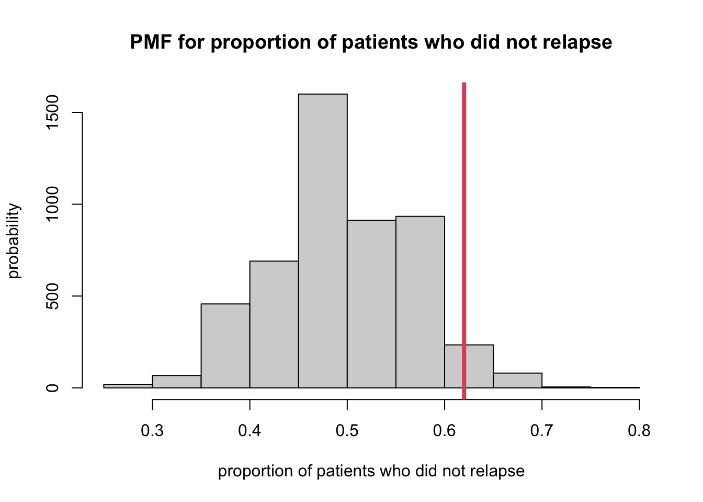
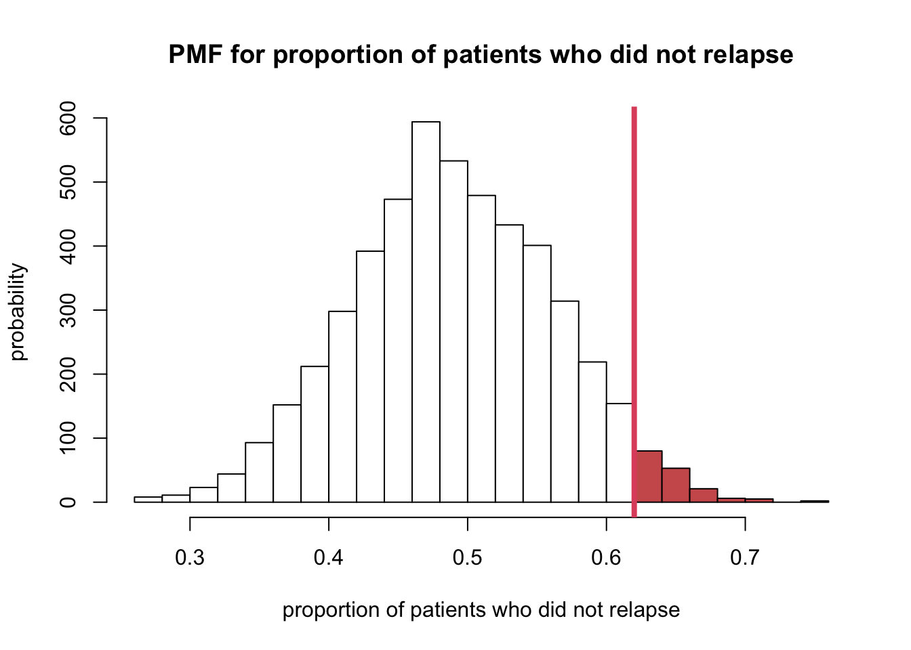
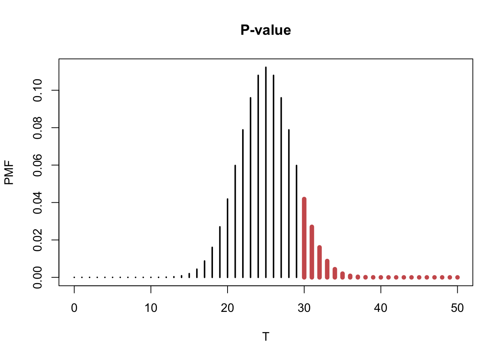

< Back to Syllabus
1. Today’s data
There was a study to compare the proportion of patients who were
not abusing substances one year after the end of a treatment program.
Nationwide, it is known that the rate of relapse after completing a
substance abuse program is 50%. A team of researchers has tested a new
substance abuse treatment program and found that at one year after the
completion of the program, 31 of the individuals out of 50 that were
treated were not abusing substances. The researchers want to know
whether their treatment program appears better than the existing
programs.
If the new treatment were not better than the existing
treatments, the researchers would have expected 50% of the patients to
have relapsed by one year post treatment.
- Our estimate for the success of the new program would be \(p = 31/50 = 0.62\).
- Is this value far enough from 0.50 to indicate that the new
treatment works better than the available treatments?
We can answer this by calculating a confidence
interval (perhaps a 95% confidence interval) for the population
proportion, \(\pi\), and determining
whether the interval contains 0.50.
- If the interval contains 0.50, we would have no evidence that this
treatment works because random variability from sample to sample could
explain why we got 0.62 when in reality the population proportion is
equal to 0.50. We could also use another approach.
2. Sampling distribution of the sample proportion
- Sample proportion, \(P=Y/n\) is a
random variable.
- It is a rescaling of the binomial random variable \(Y∼B(n, \pi)\).
- If the treatment had the same success of preventing relapse to
substance abuse within one year of the completion of treatment, the
number of patients who did not relapse, \(Y\) would have a binomial distribution,
\(Y∼B(50, 0.5)\).
- The sampling distribution for the sample proportion \(P\) is rescaling of the distribution of
\(Y\) by dividing \(Y\) by 50 (or by multiplying \(Y\) by 1/50 ).
2.1 Simulation of the sampling proportion
- Use
rbinom().
- Sampling distribution with 5000 repeats of obtaining a random sample
of 50 patients who are treated with standard treatment for substance
abuse (so with \(\pi\) for probability
of no relapse within one year of completing treatment).
- Create vector of 5000 sample proportions determined from a random
sample of 50 individuals from a population with a probability of
success, 0.50.
sampProps <- rbinom(5000, size = 50, prob = 0.5) / 50
- Plot this data and indicate where our observed sample proportion of
0.62, lies within this sampling distribution.
hist(sampProps,
xlab = "proportion of patients who did not relapse",
ylab = "probability",
main = "PMF for proportion of patients who did not relapse")
abline(v = 0.62, col = 2, lwd = 4)

- The researchers claim that their treatment program for substance
abuse is better than standard treatment programs.
- Evidence that supports their claim would be values of the sample
proportion that are greater than 0.50.
- So looking at the plot above, this would be the values of 0.62 and
the probability of getting a value of 0.62 or more is shaded in the
histogram.
h <- hist(sampProps, breaks = 20, plot = FALSE)
ccat <- cut(h$breaks, c(-Inf, 0.61, Inf))
plot(h, col = c("white", "indianred")[ccat],
xlab = "proportion of patients who did not relapse",
ylab = "probability",
main = "PMF for proportion of patients who did not relapse")
abline(v = 0.62, col = 2, lwd = 4)

- The probability of the area above can be calculated:
\[
p \text {-value }=\operatorname{Pr}(T \geq t)=1-F(t)
\]
(result <- 1 - pbinom(30, 50, 0.5) %>% round(3))
## [1] 0.059
- The probability that the researchers would observe a sample
proportion of 0.62 or greater if their treatment only worked as well as
standard treatments is 0.059. At this point, there are two choices:
- OPTION 1. The new treatment works as well as the standard treatment
and the researchers got a relatively unlikely result (i.e. one that
would happen 0.059 of the time).
- OPTION 2. The assumption that the new treatment has the same success
rate as the standard treatment is not correct.
- Different people may arrive at different conclusions.
- The chance of getting a sample proportion of 0.059 if the new
treatment had the same success rate as standard therapy would happen 6
in 100 times.
- Some people would think that is a relatively rare event and so would
be likely to believe OPTION 2 and conclude that the new treatment has a
better success rate than the standard treatments.
- Other people may believe that there is not enough information to
conclude that the new treatment has a better success rate than standard
treatment.
- Can use this approach to determine whether there is evidence
to support scientific claims.
- Specifically, (1) can determine the sampling distribution of the
sample statistic under a reasonable assumption and
- can determine whether there is evidence that the sample proportion
we obtained is unusual or not under our assumption.
3. Hypothesis testing
- Key concepts:
- Hypothesis testing: a formal statistical procedure
that quantifies the evidence that supports one of two mutually exclusive
hypotheses.
- Null hypothesis (i.e., \(H_0\)): represents the status
quo, or the expected result.
- Status quo depends on the experimental design.
- (Single group) the status quo would be based on historical
values.
- (Two groups) the status quo would be that the two groups are the
same.
- Alternative hypothesis (i.e., \(H_a\)): represents the research
hypothesis, what we really believe is true.
- Test statistic: a numercial measure of computing
the effect of interests.
- Significance level: the amount of confidence that
we have in concluding that the effect is not solely driven by
chance.
3.1 Test statistic
- Test statistic: a function of the
data whose value determines the result of the test. Test statistic is a
random variable.
- Denote with \(X_1, ..., X_n\), a
simple random sample from a distribution \(F_{\theta}\).
- The function \(T(X_1, ..., X_n)\)
is test statistic.
3.2 The null distribution
- Null distribution: the distribution of the test
statistic if the null hypothesis is true.
- Can think of the null distribution as the reference distribution: we
determine where the observed value of the test statistic is within the
sampling distribution under the null hypothesis.
3.3 \(p\)-value
- the probability under the null hypothesis of observing a value as
unlikely or more unlikely than the value observed for the test statistic
based on sample.
- a measure of the distance from the observed statistic to the
value of the parameter specified by the null hypothesis.
- the probability that chance alone would produce a test statistic as
extreme as the one observed.
- (For \(p\)-value calculation) need
to know (or estimate) the CDF of the test statistic under the null
distribution.
\(p\)-value is NOT the probability
that the null hypothesis is true.
3.4 Significance level
- We define a result as statistically significant if
the value of the test statistic is unlikely to occur by chance if the
null hypothesis is true.
- “unlikely” can be defined as significance level, \(\alpha\).
- Should be set a priori meaning at the time the
study is designed.
- Common expression: “a result is statistically significant at level
\(\alpha\) if the \(p\)-value is such that \(p\)-value < \(\alpha\)”
3.5 Steps of Hypothesis Testing
- <1> Decide on the effect that you want to study. Select a
suitable test statistic to measure the effect.
- <2> Set up a null hypothesis, which is a simple, tractable
model that allows you to comput the null distribution.
- <3> State the alternative hypothesis. This will be either
one-sided or two-sided.
- <4> Do the experiment, collect the data, and compute the
observed value of the test statistic.
- <5> Make a decision: reject the null hypothesis if the \(p\)-value < \(\alpha\), significance level.
- <6> Write a conclusion using words in context of the study
that generated the data. This should contain an indication of whether
the result is statistically significant (report a \(p\)-value) and should give an estimate of
the result (including a confidence interval).
4. Hypothesis test example
- The researchers want to know if their substance abuse treatment
program has a greater proportion of patient who do not relapse within
the first year after the completion of treatment than the currently
available standard treatment.
- \(\alpha\)=0.05
- \(H_0: \pi=0.5\)
- This is the null hypothesis because the status quo is the currently
used standard treatment program it has a historical value of the
proportion of patients who do not relapse within the first year of
treatment of 0.50.
- \(H_a: \pi>0.5\)
- This is the alternative hypothesis because the researchers believe
that their new treatment program is better than currently used
standard.
- The new treatment program would be deemed better if the proportion
of patient who do not relapse within the first year after the completion
of treatment is greater than the proportion for the current standard
treatment.
- estimator for the population proportion, \(\pi\) is the sample proportion and that its
sampling distribution is a rescaled binomial PMF.
- Test-statistic: \(T(Y)=Y/50\)
- Observed value of the statistic is \(t=0.62\).
- \(T\) has a rescaled binomial PMF
and, under \(H_0\), \(\pi=0.5\), the null distribution of the
test staistic is a rescaled \(B(50,
0.5)\) PMF with a rescaling value of \(1/50\) (meaning we divide the binomial
random variable \(Y\), by 50).
- Since it’s one-sided test and the researchers want to reject \(H_0\) if \(\pi>0.5\).
- \(p\)-value = Pr\((T \ge t)\) = 1 - \(F\)(\(t\)), where F() is the CDF of the rescaled
binomial distribution.
- \(p\)-value can be calculated by
using
pbinom() in R.
- Pr\((Y \ge 31)\) = 1-Pr\((Y<31)\) = 1-Pr\((Y \le 31)\)
(result <- 1 - pbinom(30, 50, 0.5) %>% round(3))
## [1] 0.059
- In this case, \(p\)-value = 0.059
is greater than the significance level, \(\alpha=0.05\).
- We do not have enough evidence to reject the null hypotehsis \(H_0\).
- Conclusion: there is no evidence that the proportion of patients who
do not relapse within the first year after treatment completion with the
new treatment program differs from 0.50 (or is better than the standard
treatment program).
plot(0:50, dbinom(0:50, 50, 0.5), col="black", type = "h", lwd = 2, xlab = "T", ylab = "PMF", main = "P-value")
points(30:50, dbinom(30:50, 50, 0.5), type="h", lwd = 6, col = "indianred")

- The sum of the probabilities of the red region is the \(p\)-value.
5. Key Points
- (\(p\)-value < \(\alpha\)) the data show strong evidence
against the null hypothesis, hence we reject the null hypothesis.
- (\(p\)-value \(\ge\) \(\alpha\)) the data does NOT show strong
evidence against the null hypotehsis. The evidence is consistent with
the null hypothesis. Thus, we fail to reject the null hypothesis.
- Note that we never accept the null hypothesis. (There is no
guarantee that the null hypothesis is true!)
- All we can conclude if \(p\)-value
> \(\alpha\) is that there is no
evidence to reject the null hypothesis in favor of the
alternative.
- This does not mean that there is evidence in favor of the null
hypothesis.
- (\(p\)-value > \(\alpha\)) This does not mean the null
hypothesis is true. No evidence against the null hypothesis is not
evidence for the null hypothesis.
6. Why do we do an indirect test?
The problem is that if researchers believe that their treatment
for substance abuse is better than the standard treatment.
This means they believe that the proportion of patients who have
not relapsed within one year of treatment completion is greater than
0.5.
But to calculate a probability that this is true, based on our
test-statistic, we need to know the sampling distribution under this
hypothesis.
However, it is just stated that it is believed that the
population proportion, \(\pi\) is
greater than 0.50 but no specivfic alue is given.
Hence, we do not know which rescaled binomial random variable and
distribution would be the one for the sampling distribution.
This is why we take in indirect approach.
If we assume the status quo, then we can compute the sampling
distribution if we believe the status quo (i.e., null hypothesis) is
true.
But that leaves us with the indirect approach: we assume the null
hypothesis is true and then assess the amount of evidence against this
assumption on the basis of a \(p\)-value.
If the \(p\)-value is really
small, we can either believe:
- <1> we got an a rare or unusual sample, or
- <2> the null hypothesis is not true.
If the \(p\)-value is “small
enough”, we conclude <2>, the null hypothesis is not true.
- “small enough” means level of significane, \(\alpha\).
Court example
- \(H_0\): The person on trial is
innocent.
- \(H_a\): The prosecution believes
the person is guilty.
- Data: The evidence is presented.
- Reject \(H_0\): The jury will
convict if they believe the individual is guilty “beyond reasonable
doubt” which is \(p\)-value < \(\alpha\).
6.1 Convention
- It is the convention in performing test of significance to do a
two-sided test
6.2 \(p\)-value and confidence
interval
- It is usually expected that the significance level \(\alpha\) you use for hypothesis testing in
an analysis is the same one you use in computing a confidence
interval.
- (One-sided test) you need to get the corresponding one-sided
confidence interval. There are two choices.
- The population parameter is greater than what is
hypothesized in the null hypothesis. (i.e., \(H_0: \pi>0.5\))
- The population parameter is less than what is
hypothesized in the null hypothesis. (i.e., \(H_0: \pi<0.5\))
- NEVER just report a \(p\)-value
alone.
- ALWAYS give the estimate of the population parameter and
corresponding confidence interval in addition.
7. Test for the proportion of one population using
R
- Let \(Y\) be a binomial random
variable, \(Y~B(n, \pi)\). Suppose that
we observe \(Y=y\). To test
- \(H_0: \pi= \pi_0\)
- \(H_a: \pi \ne \pi_0\)
- We compute the probability of observing a value as or more extreme
than the observed \(y\).
- Also called as the Binomial test.
7.1 Substance abuse treatment program
binom.test(31, 50, p = 0.5, alternative = 'greater')
##
## Exact binomial test
##
## data: 31 and 50
## number of successes = 31, number of trials = 50, p-value = 0.05946
## alternative hypothesis: true probability of success is greater than 0.5
## 95 percent confidence interval:
## 0.4939593 1.0000000
## sample estimates:
## probability of success
## 0.62
8. Complete example
The goal was to lose at least 5 pounds by week 6 of the study. A
person was classified as ‘positive’ if s/he had lost 5 or more pounds by
week 6 of the or classified as ‘negative’ is s/he had not lost 5 pounds
by week 6. There were a total of 35 individuals enrolled on the study.
The data are in an Excel spreadsheet in a comma delimited format. You
are asked to analyze the data to determine whether the diet is
successful. The investigators would consider the diet to be successful
if more than 60% of the 35 individuals are considered ‘positive’ using a
significance level of \(\alpha\) =
0.01. It is known that the best diet to date has a rate of 60% of
participants lose 5 pounds by week 6. For this study, patients were
weighed at baseline and then at week 6. If at week 6 an individual
weighed 5 or less pounds compared to baseline, they were labelled
‘positive’, otherwise they were labelled ‘negative.’ The data are in a
.csv file called dietData.csv.
dietData <- read.csv('data/dietData.csv', header = T)
dim(dietData)
## [1] 35 2
names(dietData)
## [1] "id" "x"
dietData %>% head
## id x
## 1 1 positive
## 2 2 positive
## 3 3 positive
## 4 4 positive
## 5 5 positive
## 6 6 positive
summary(dietData)
## id x
## Min. : 1.0 Length:35
## 1st Qu.: 9.5 Class :character
## Median :18.0 Mode :character
## Mean :18.0
## 3rd Qu.:26.5
## Max. :35.0
- To perform a hypothesis test, it is useful to explicitly state (for
yourself) what the null hypothesis and alternative hypotheses are.
- \(H_0: \pi=0.60\); the proportion
of individuals who lose 5 of more pounds by week 6 is equal to 0.60
- \(H_a:\pi\ne0.60\); the proportion
of individuals who lose 5 of more pounds by week 6 not equal to
0.60
y <- sum(dietData$x == "positive")
testResults <- binom.test(y, 35, p=0.6)
testResults$con
## [1] 0.6635017 0.9343782
## attr(,"conf.level")
## [1] 0.95
- \(p\)-value: 0.005
- 95% confidence interval for \(\pi\)
is 0.664 to 0.934
- Based on the \(p\)-value, we would
reject the null hypothesis because the \(p\)-value < 0.01.
- Conclusion: It appears as though the new diet has a
higher proportion of individuals who have lost 5 or
more pounds at week 6 compared to baseline (\(p\)-value=0.005). For the new diet, it
appears as though the proportion of patients who lost 5 or more pounds
at week 6 compared to baseline was 0.829 (95% confidence interval: 0.664
to 0.934)
< Back to Syllabus